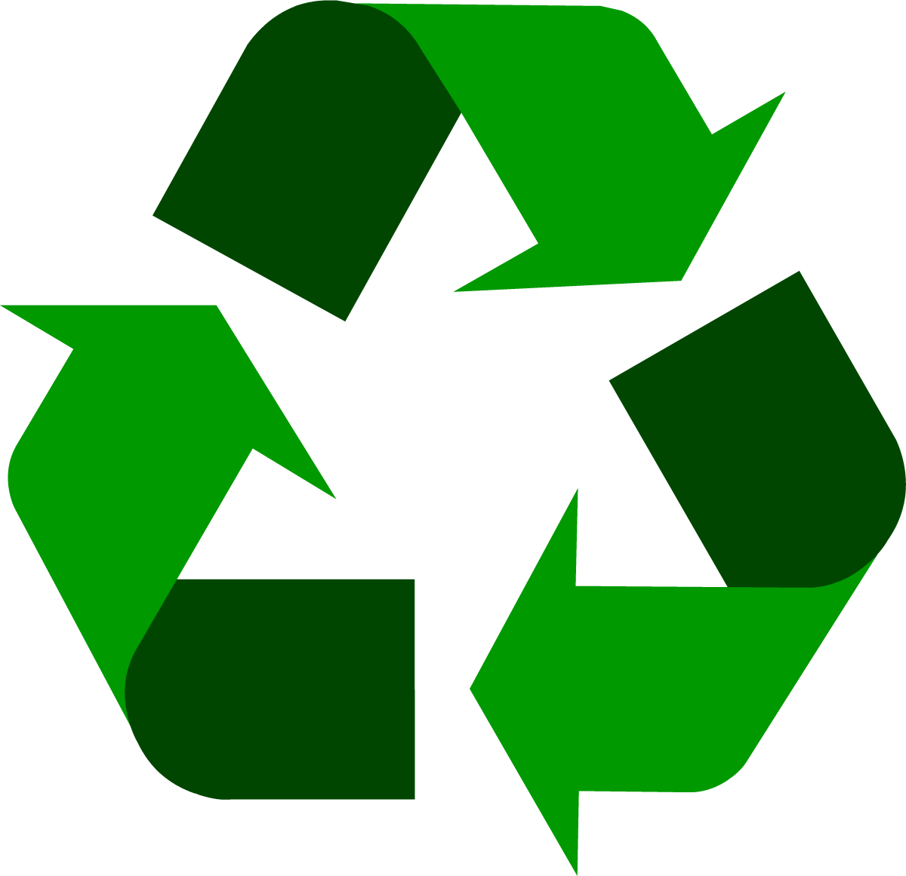

A green hydrocarbon future
There's a need for drastic changes in today's climate emissions. In order for Norway to become a climate-neutral country, we have to do something about our everyday climate emissions. There are approximately 3,2 million vehicles in Norway, where 18% are electric vehicles, which means that the remaining 82% are helping to damage the enviroment and our climate. Petrol and diesel vehicles have an excessive CO2 emission that affects the ozone-layer and our environment. Therefore, we have come up with a solution to this problem, which we call GreenCarb. Our idea helps to affect the air purity and climate in a positive way, and the idea makes the carbon from cabon dioxide reusable.
Our idea is an object that would split the carbon dioxide into carbon and oxygen, and collect the carbon in a container, while the oxygen is released. A filter will filter the carbon dioxide, split the carbon and the oxygen where the carbon is stored in a contatiner while the oxygen is transported to the exhaust systems. This is an idea which is realistic to implement on both new and older vehicles. It is also possible to implement on vehicless being produced. This type of technology exists today within larger machines. Aker Solutions is one of many companies in the world that is currently using this environmental-friendly technology. With help from research and technology that already exists, it is realistic that within 3-5 years there will exist carbon captures that will fit within the exhaust system in a vehicle. With these carbon captures we can, with the help of catalysts and small amounts of electric power from the engine, easily split the carbon dioxide in the exhaust system. We will be world-leading in a revolutionary use of green technology.
What does it take to get people to use GreenCarb. By using GreenCarb we will fast and efficiently reduce emissions in Oslo, which can further lead to inspiration for other countries and cities. Possible benefits for people using GreenCarb will be special deals within Oslo city and subsidised road tax. There will be restrictions for cars not using GreenCarb. The gas stations will compete for the carbon gathered in order to increase their income. The gas stations can issue credits, money or other benefits to people choosing to dump their carbon at their station.
The carbon gathered in the gas stations kan be reselled to businesses that makes products containing carbon. Carbon can be used in many products, therefore, it will not be difficult for the gas stations to get rid of the carbon. This is a very strong and light material. Carbon can be used in planes, cars, computers and a lot more. Both as a fuel and an element in iron production. With this solution, Oslo will be known as the worlds most innovative and environmentally friendly city. The possibilities are endless with our solution. This is neccessary for the climate in Oslo and other cities. 